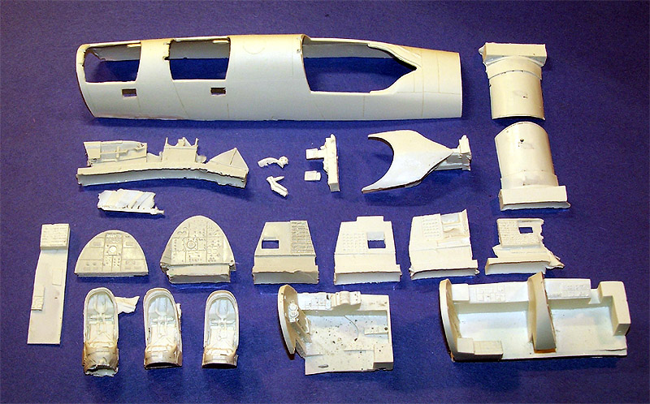
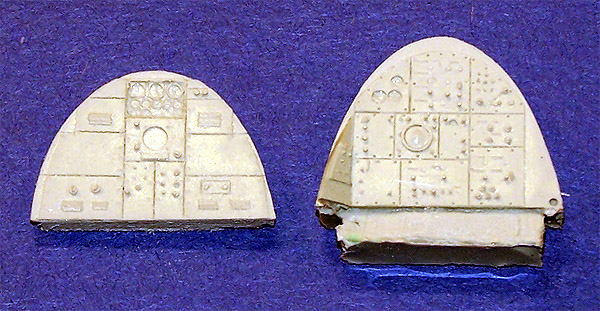
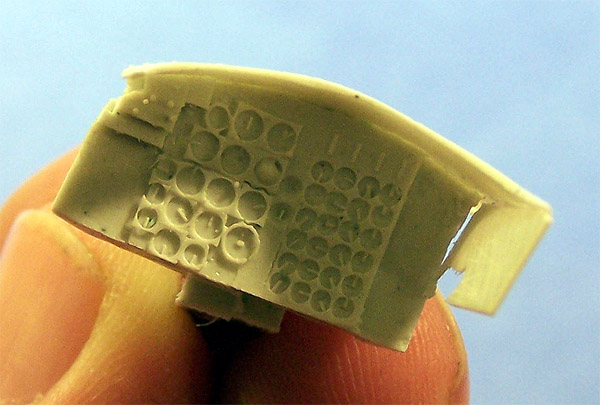

Golden Dragon Productions 1/48 B-58 Cockpit Set

Kit #48001
MSRP $29.95
Images and text Copyright � 2005 by Matt Swan
Developmental Background
I have been waiting for this package for a long time, a really long time and I don�t think I am the only modeler who can say that. More than a year ago Golden Dragon announced the creation of this detail set for the Monogram B-58 and published images of the parts under construction. This news was well received by the modeling community as the only option to detail the back seats until this time was from Engines and Things and that set definitely left something to be desired. From that moment things seemed to go downhill for Golden Dragon, production schedules were not being met and orders placed for other items presented as ready for shipment were not being filled. For a time it looked like there would be no alternative back seat set for the 1/48 B-58 Hustler.
I think the root problem was that Golden Dragon Productions (actually a single man cottage industry) had bitten off more than it could chew. Great Models Web Store entered negotiations with GDPR to act as the distributor for the items and this seemed to help lend some focus to GDPR and at long last some parts are flowing down the line.
The Kit
The package arrives in a sturdy white cardboard box with layers of bubble wrap and foam peanuts protecting the resin parts inside. The parts are both exciting and disappointing at the same time. I can see evidence that GDPR is still rushing to fill orders and parts are being extracted from the molds before they are fully cured. This can be seen in the warped pour molds but fortunately the warpage seems to be contained to just the stubs. There is a considerable amount of flash on all the parts and both back seat access ports are completely flashed over coming out of the box as are the side windows. Some of the flash is very thick and heavy. More than once I had to resort to using a razor saw to remove the excess material.

The upper fuselage section has been recast by GDPR and this seems to be to make changes to the interior surface to support the new cockpit components. Just to refresh your memory, the Monogram kit has all raised panel lines; the recast fuselage section has recessed panel lines. This pretty much necessitates that the kit be scribed to match but if you are going to the extreme of detailing the rear cockpits you probably should be taking this step anyway.
For me some of the more exciting pieces are the very well detailed panels for the two aft crew positions. These feature well defined instruments and plenty of delicate raised switches. The pour stubs are easily sawn off and the pieces fit into the new fuselage section quite well. They also seem to mate to the cockpit floor without any problems. Side panels are also well detailed and include cut-outs for each side port. Like the rear access ports, these areas are skinned over with resin flash and some larger boogers that need to be carefully cut away.
One of the most disappointing areas for me was the three crew seats. It seems that a lot of time and effort was put into carving extremely well detailed masters for these but the molds either have been over used or were made from too soft a mold material. Pieces of mold material were stuck into the lower areas of the seats and there were several large casting boogers in other areas resulting from mold material being removed with a previous casting. The end result was poorly formed seats that hinted at levels of greatness. I�m not sure yet if they can be salvaged or if I will have to replace them with the seats from the Engines and Things set.

The new pilot�s dashboard is a welcome piece with the GDPR set. It is very nicely detailed and has a very fine glare cover, almost too fine. The cover is flimsy which can�t really be avoided at this scale so extreme care must be taken while handling it. The forward area of the dash that will be hidden does have some stiffening structure to it to compensate for the flimsiness to some degree. At Great Models there is a picture of the parts for this kit and it does show a set of clear pieces however my set was lacking these parts. I�ve reported the problem the GMW and am waiting to see just how long it takes for them to squeeze the replacements out of GDPR. I imagine that in a worse case scenario I could use the Monogram kit clear pieces.
In addition to a lot of flash we also have several large air bubbles. I found an area along the lower side of the fuselage section that had barely any resin at all as a result of a very large bubble there; also there were bubbles in the hatches and in several areas in the cockpit flooring. In the top image of the parts you can see several dark spots on the pilot�s cockpit floor; those are not air bubbles but simply dark matter mixed in with the resin. The kit includes a small sheet of directions that show how to assemble the cockpit pieces and where to perform surgery on the Monogram parts. All the images are a little on the small size for my aging eyeballs and some aspects seems a little vague at this time, maybe they will become clear when I actually start to build this.
Conclusions
This has been a long awaited set and is fairly expensive. It does have some issues which all seem to come from hurried production and overused molds. It certainly is a better set than that offered by Engines and Things many years ago. The general fit of the parts seems to be good while the instructions are only fair. A lot of clean-up is needed here; I spent nearly two hours cleaning up pieces just for review pictures. If you plan on building a B-58 with the rear hatches closed don�t bother putting your modeling dollars into this package but if you desire to open up the back seats then I think you should take a good hard look at this package. Yes it has some problems but in the end, it is the best thing that has come out for the Hustler in 1/48 since the kit itself was released.